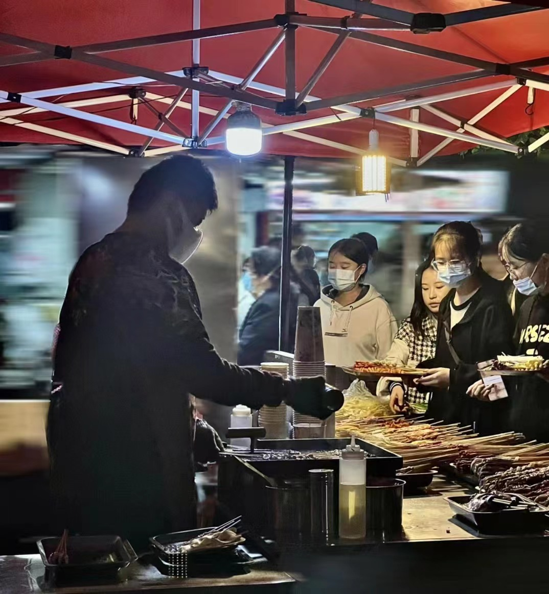

云吃美食
-

-

同学简介
除了在学术研究和科技创新方面的卓越成就外，华东理工大学也以其丰富多样的美食文化而闻名。在华东理工大学校园内，学生和访客可以品尝到各种美味的食物。校园内设有多个食堂和餐饮点，提供各种口味的餐饮选择，包括传统的中国菜肴、西式快餐、日本料理、韩国烧烤等。无论是想要一顿丰盛的午餐，还是寻找一家舒适的咖啡馆与朋友聚会，华东理工大学的美食场所都能满足各种口味和需求。此外，华东理工大学周边地区也有许多美食选择。步行距离内有各种餐馆、小吃摊位和咖啡店，为学生和教职员工提供了丰富多样的选择。无论是品尝正宗的上海菜、尝试各种地方小吃，还是享用国际美食，都能在附近的餐饮场所找到心仪的美食。华东理工大学以其多样的美食文化为学生们带来了丰富的饮食体验，不仅满足了他们的口腹之欲，还丰富了校园生活的多样性。无论是探索传统中餐的美味，还是尝试国际美食的刺激，华东理工大学的美食场所将为您带来一场美味的旅程。